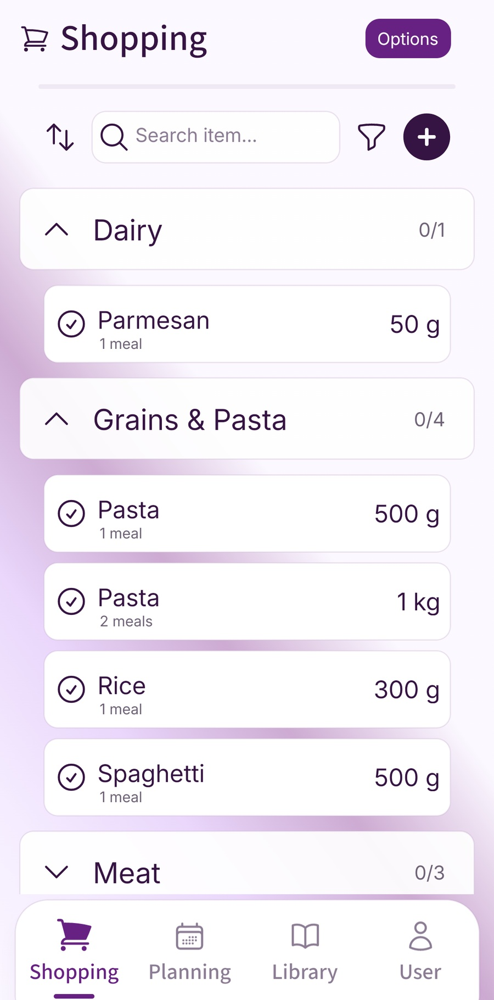

Toothpaste, bin bags, and washing-up liquid will never appear in a dinner recipe. Keep a reusable household checklist alongside your meal ingredients, then check what is running low before each shop. Here is a room-by-room routine and a simple way to share the list.
Separate meal ingredients from regular household items
Meal ingredients and household essentials behave differently. Meal ingredients come from the plan: mince for chilli, wraps for fajitas, yoghurt for curry, potatoes for jacket potatoes. Regular items run out in the background. Nobody plans a dinner around washing-up liquid, but it still has to be bought.
This is why a shopping list based only on recipes always has gaps. It can be accurate for dinners and still miss toothpaste, kitchen roll, loo roll, bin bags, dishwasher tablets, cereal, packed-lunch snacks, and the second loaf of bread that will disappear before Thursday.
Keep the two parts connected, but do not make them the same job. Let the meal plan create the food ingredients. Then add a separate regular items check before the shop is finished.
Plan the meals first
Choose the dinners and turn them into ingredients so the main food shop has a clear base.
Run a regular-items check
Look for the things that run out outside the meal plan: bread, milk, cereal, toiletries, cleaning supplies, and general household items.
Keep the list reusable
Save the items you buy often, so next week starts with a prompt instead of a memory test.
Make a recurring list of things that disappear quietly
The easiest place to start is not the supermarket. It is the moment someone says, "We always forget that." Write those items down. They are the ones most likely to fall through the gaps because they do not sit neatly inside a recipe.
For many UK households, the first list is fairly predictable: bread, milk, cereal, teabags, coffee, squash, fruit, packed-lunch snacks, washing tablets, washing-up liquid, kitchen roll, foil, bin bags, toothpaste, shampoo, shower gel, loo roll, deodorant, and batteries. Your own list will be shorter, longer, or stranger. That is fine. It only needs to reflect the things your home actually runs out of.
Once the list exists, you do not have to buy everything every week. The point is to check it. If there are already dishwasher tablets in the cupboard, leave them off this shop. If there are two slices of bread and packed lunches tomorrow, add bread now rather than waiting for the morning.
Check by area, not by memory
Memory is unreliable because regular items are spread across the home. Some are in the kitchen, some are in the bathroom, some live under the sink, and some only get noticed when someone reaches for the last one. A quick area check is more dependable.
Before shopping, scan the kitchen basics, packed-lunch supplies, cleaning cupboard, bathroom items, and general drawer or cupboard. This does not need to become a long stocktake. You are looking for obvious gaps, near-empty packets, and items you know will not last until the next shop.
If you shop online, do the same check before opening the supermarket app. It saves the annoying top-up trip for one item that could have been added in ten seconds.
Use this template: regular household shopping check
Copy this into a note, print it, or turn it into a reusable list. You do not need every item. Keep the prompts that fit your home.
- Food basics: bread, milk, cereal, eggs, fruit, snacks, packed-lunch items, tea, coffee, squash, butter, cheese.
- Meal-plan ingredients: items needed for this week's dinners, combined and checked against the fridge, freezer, and cupboards.
- Cleaning: washing tablets, washing-up liquid, dishwasher tablets, surface spray, kitchen roll, cloths, bin bags.
- Toiletries: toothpaste, shampoo, shower gel, deodorant, loo roll, soap, sanitary products, nappies, wipes.
- General: foil, baking paper, cling film, batteries, light bulbs, stationery, birthday cards, stamps.
- Before paying: remove anything already at home, add near-empty items, and check whether any busy evenings need extra easy food.
Use categories that match the way you shop
One long list is easy to write and awkward to use. If toothpaste sits between pasta and peppers, it is easier to miss. Basic categories make the list quicker to scan, especially if someone else is doing the shop.
Four groups are usually enough: food, cleaning, toiletries, and general. You can be more detailed if it helps, but most households do not need a perfect aisle map. The aim is simply to stop regular items hiding among dinner ingredients.
Categories also help when plans change. If you skip one dinner, the meal ingredients can move. The washing tablets and toothpaste still stay on the list if they are needed.
Give shared lists a few simple rules
Shared shopping lists only work if everyone treats the list as the place where shopping information goes. If one person adds things to an app, another sends a text, and a third leaves the empty packet on the side as a clue, the shopper is still piecing the week together.
Keep the rule simple: if you notice something is low, add it to the list when you notice it. Not later. Not when someone asks. At the point you use the last bin bag, open the list and add bin bags.
It also helps to agree what "low" means. Some homes replace toothpaste when there is one spare left. Others wait until the current one is nearly gone. Either can work, as long as the routine is clear enough that one person is not expected to remember everything.
Where Fameally fits into this routine

Fameally is useful here because the shopping list is not separate from the weekly routine. Meal ingredients can come from the plan, while regular household items can be added to the same place. That keeps the list closer to how a real shop works.
If you use Fameally with other household members, the list can become the place everyone checks before shopping. It reduces the need for last-minute messages and makes the shop less dependent on one person noticing every empty packet.
Review the items you still miss
The first version of your regular list will not catch everything. That is normal. The useful habit is to add missed items after the shop, not just complain about them in the moment.
If you get home and realise there is no kitchen roll, add kitchen roll to the reusable list. If packed-lunch snacks keep vanishing by Wednesday, add them to the weekly check. If you always buy too much of one item, make a note to check the cupboard first.
After a few shops, the list becomes much more accurate. Not because anyone suddenly has a better memory, but because the routine starts carrying the dull, easy-to-forget items for you.
Use the checklist as a prompt
A recurring item is a reminder to check, not an instruction to buy it every week. Add only what you need to the current shopping list. Keep occasional purchases such as batteries separate from regular groceries so the list stays useful.
FAQ
- How do I stop forgetting household shopping items?
- Keep a reusable list of regular items and check it before each shop. Meal ingredients should come from the meal plan, while household basics get their own check.
- Should household items be on the same list as food?
- Yes, but they should be grouped clearly. Keeping food, cleaning, toiletries, and general items in separate sections makes the list easier to scan.
- What should be on a regular household shopping list?
- Start with the items you forget most often: bread, cereal, packed-lunch items, washing tablets, bin bags, kitchen roll, toothpaste, loo roll, shower gel, and cleaning supplies.
- How often should I check regular shopping items?
- Check them before the main weekly shop. Add urgent items as soon as they are noticed, then use the weekly check to catch anything close to running out.
- Is a shared shopping list useful for household supplies?
- It is useful when everyone uses the same list. The key is to add items when they are noticed, rather than relying on one person to remember everything later.
Keep planning
These guides cover the meal-plan side of the shop and the weekly routine that sits around it.
Plan the week in Fameally.
Download Fameally to plan meals, generate shopping lists, and keep regular household items easier to remember.